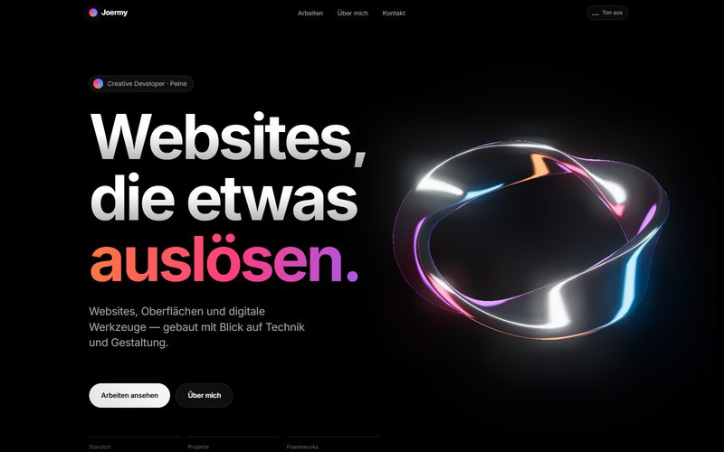

Websites — 2026
Dieses Portfolio
Reines HTML, CSS und JavaScript, ohne Framework und ohne Build-Schritt, mit einer eigenen 3D-Szene im Hero.

Überblick
Statische Mehrseiten-Website mit eigenem Datensystem für Projekte, selbst gehosteten Schriften und einer eigenen WebGL-Szene mit einem in Blender modellierten Chromband — kein Baukasten, kein CMS.
Der Ansatz
Jede Seite ist reines HTML, jede Projektseite entsteht aus einem zentralen Datensatz (daten/projekte.js) statt aus Copy-Paste-Markup.
Das System
Vier CSS-Dateien nach Zuständigkeit getrennt, mehrere JavaScript-Module, ein zentrales Datenfile pro Sammlung. Drei-Klick-Regel: neues Projekt = neuer Eintrag in projekte.js, Bilder ablegen, fertig.
Technik
HTMLCSSJavaScriptThree.js (selbst gehostet)